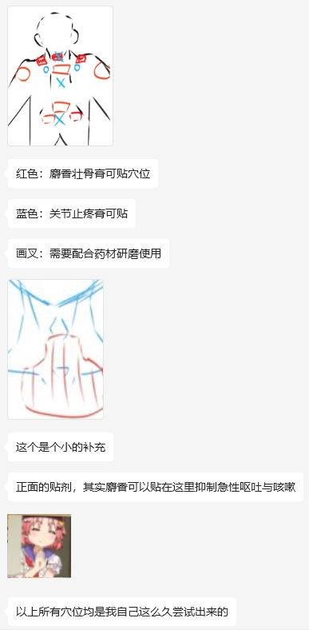

报告者：卡洛
处理报告者：超级后后后藤
身高体重：178cm,75kg
记入时：2024.05.05.14:54
在某些穴位贴上药剂、药膏剂可以强化药效、反制药效——反制：口吐白沫、眩晕、震颤、幻觉、幻听、耳鸣
云南白药保险子可研磨贴在敷贴上，也可强心苷、反制吐沫、幻觉、头晕、脑胀、心率不齐。膏药推荐云南白药与羚牌，泛用与性价比与实用性最高的是两老虎牌贴剂，最猛的目前为云南白药
咳嗽：胸骨老虎截取半片
各种头部疼痛：颈椎C7敷料止疼膏
兴奋性中毒类反应：颈椎C7贴伤寒膏药，温水送服云南白药粉
处理不下去了
关于中毒反应的现象：你的大脑会感到无知觉的疼痛，明显的吐舌症状，抽搐以及颤抖，视角模糊以及无法站立等。然后若是实在无法就医，可自行用温水或酒精送服5mg剂量左右 「云南白药粉」 。若是不清楚大概是多少的也就是倒在你的左手虎口的剂量，舔舐服用即可，接下来尝试进行茶水服用可更全面的缓解中毒，中毒反应若是在4小时内没有获得专业急救或者有效解毒措施将会有极大死亡风险 关于右美沙芬中毒特效药，目前也只能在医院能够拿到与注射/输液进行治疗，请各位务必及时就医
我我我
有一点交流障碍、
中成药剂解毒的话，主要聚集在了一些中药处方以及膏药贴剂的解毒配方。
overdose之前在，嗯，某些穴位贴上一些特定的中成药剂以及药膏的话，是会有overdose的一些翻倍效果，或者说是增强药效也有。我就是说overtime过后，如果说是产生了中毒反应，然后在特定的穴位以及部位贴上指定的药膏和药剂，会产生解毒的作用。
以及一些怎么说呢，一些药剂的，还有一些药材，如果在特定的情况下服用的话，是可以达到一个急速止疼和急速解毒的效果的。包括但不限于口吐白沫呀，还有就是眩晕，视觉，视觉消失啊，幻觉幻听以及耳鸣。
来梳理和稍微透露一点点研究
首先说些能够帮助到大家的
云南白药粉请务必在家买两盒，一盒用于急救，盒用于各种制药
云南白药保险子可作为解毒剂研磨贴在敷贴上用于解毒，可治疗急性的中毒反应，包括但不限于吐沫，幻觉，头晕，脑胀与心率不齐
保险子单独服用可用于缓解急性心肌问题，也可以用做解毒(但是有的杀鸡用牛刀
膏药推荐云南白药与羚牌，膏药可以视情况贴于穴位
目前人体测试一轮，泛用与性价比最高的是两老虎牌贴剂，此贴剂有很强的实用性，最猛的目前为云南白药
接下来介绍一下大家可以参考的穴位
咳嗽/三字肿胀:老虎截取半片帖于颈部下侧缓解，实测有效
神经类疼痛/头疼/牙疼/偏头痛/头晕:后颈部位鼓包处敷料止疼膏即可
中毒类反应:后颈部位鼓包处贴于伤寒膏药且温水送服云南白药粉方可解毒，一般非精二类药物过量中毒此方法均有时间效果
附录-数据b提供只来自我本人，数据只提供急救措施，每一样的副作用尚未定论，我还在加紧整理真实信息，后续会更新进展，请务必在迫不得已的情况再使用此链接
平时我在overdose的过程中，会掺杂着有各种各样的药剂，是去尝试去解毒，以及去尝试去加倍，然后的话，各种各样的药剂我大概试了有十几20种吧。然后各种各样的药效，我也差不多摸透了。
主要的推荐还是围绕在云南白药和临临牌的膏药方面的。
你们的膏药分为化化瘀止疼的那个关节药和一个麝香壮骨的一个贴剂，它俩的贴剂的效果也是不一样的。
然后的话，黄芪和那个白棋子，如果在over does过后的时候按片剂服用生材料的话叫。就是咀嚼服用的话，是可以止到一个气血化瘀，以及就是说能把理子让下来，但是呢，又不会影响到后期的一个overdose的效果，也就是说你可以体会到overdose的一个快感，但是并不会感觉到疼痛。
具体药理的话，我并不是学中医的，所以说我也不知道原因啦，但是我的确是亲身试验，嗯，我觉得就是做这种试验的很少，所以说我从来没有分享过我。一直都是把自己当做一个实验的载体，所以说就一直在做自我的实验。
但是我现在事先说一句，我本身是一个美术生，就是我是学美术的。
然后，再然后，我也不是药理学的，我也不是学医的，就是我对药理真的是没什么见解，而且中药这种中医学的话，对我来说很困难，而且它比较玄学。
嗯，所以说呢，原理我目前尚不可知，但是呢，确实是我得出了很多很多次的实验得出的，嗯，这个是有迹可循的，而且是可以应用的。
我想做到的呢，主要是做出一个能够让所有人都能够做到的一个解毒配方，然后的话，最方便去大家最便宜的去使用，然后的话就可以拯救于很多的患者。在overdose的时候，如果是翻车了，可以是好好的救回来，对吧？
关于中成药剂的话，我这边的研究目前有白棋子，黄芪，枸杞，菊花茶和柚苷，和那个叫什么来着，灵鹿牌和云南白药，就这几类，我是研究的比较透彻的，然后。嗯，我尽量整理一下吧。
中医我一直有在实验
并且临床在用
所以我对中药材方面比较熟悉，但我并不清楚原理、
目前可以提供给妈咪的配方是，就是在颈椎的后面有一个叫大椎的一个穴位，那个地方是一个主要的解毒穴贴剂，云南白药的。化瘀止疼膏，可以做到强力的一个解毒效果。
然后在两侧的一个肩胛骨和一个三角区的方位，贴上两片那个关节止疼膏，再配上一片云南白药的那个活血化瘀膏，和那个麝香止疼膏的话，然后在背部的下半侧脊椎，就是靠近屁股那里，我。稍微往上一点的部分贴上一部分，然后的话全背通背，大概贴六到八张的样子，就可以做到全局解读。
然后的话，这个膏药贴剂要搭配云南白药的那个药粉服用啊，一般是在五克，五毫克到八毫克左右，也就是说，嗯，我平时的话是习惯于一糊口的样子。嗯，我这这个剂量有点奇怪，但是确实是。
嗯，还有保鲜纸的话，用于，其实保鲜纸用于使用它并不能解毒，但是保鲜纸很奇怪的是，我用于它进行了一个研磨的状态，研磨成粉末后。配合了一个枸杞子，然后打磨成粉，然后配合了那个壮骨膏，贴在了大椎的方面的时候，有一个巨。非常快速的一个解读。
嗯，不是后脑勺吧，反正就是后脑勺下面的一个，有一个包包，就是鼓起来的位置，那个地方是一个比较重要的解读穴，另一个位置就是位于两侧夹背蝴蝶背的中间的一个。颈椎的位置，另一个穴位就是屁股上面的一点点的一个脊椎，这三个穴位是同时贴的话，会有一个很大的解毒效果。
再然后是一些腹左，就是腹左的一些穴位，嗯，比如说是左侧的和右侧的那个颈动脉的一个地方，可以去贴一张那个。麝香止疼膏，但是不能贴那个关，关节化瘀膏，关节化瘀膏如果贴在颈动脉，会产生极大的那个瘙痒和一个疼痛的感觉，而且贴了之后也会让人感觉脑袋非常的疼，有副作用。记住，一定是麝香止，麝香壮骨膏，不是那个活血化瘀膏，不是那个关节止痛膏。
再然后的话，是那个背部肩膀的话，蝴蝶背的背脊方面，可以贴出两到三片的麝香壮骨膏，可以搭配起黄芪。打成粉末，然后一起搭配着那个丽丽丽丽丽丽丽卡多因是是叫丽卡多因吗？哦，丽卡多丽多卡因乳膏啊。因为这样可以脱敏，然后防止就是说皮肤溃烂。
然后的话，在中层药材中，黄芪还有麝香，然后枸杞子，还有那个莲子，莲子这个东西很特殊，莲子这个东西它需要。研磨之后用沸水煮至熟透，研磨之后用沸水煮至熟透，然后这个东西拿去服用，可以做到一个解毒，但是呢，这个解毒我只试过一次，而且是莫名其妙的，就是。意外的一次解读，我，不，我并没有进行第二次实验，我并不知道这个实验它的可行性。
益多卡因乳膏配合的膏，配合膏药，主要是因为这边的话，我想要让大家就是以最便宜的价格去做到解毒剂的方法的话，也能够减少更少的一个。怎么说一个伤害这个膏药它贴的话会导致皮肤脱落，以及一些过敏反应，我一直贴的都是那种五块钱的，还有十块钱的那种贴剂就是。没有加脱敏成分的。
目前已知就是其实它的膏药的话，嗯，散装的就是盒装的版本的边角料，它没有加透明成分而已，它就是会贵很多。
优美沙芬的话，我一般就称之为优美啊，然后的话，我欧弟的主要类型是欧优美沙芬和那个喹硫平。
嗯，喹硫平我OD过一次，我再也不会OD了。喹硫平我OD的一次使用的解毒剂也完全失效了，那次OD是把我整个脑子给o炸了。
复方利多卡因乳膏，是用于防止脱敏，以及就是背部有活血止疼膏的话，那个关节止疼膏，它是会非常非常疼的一个效果，如果你不去。去上那个利多卡因乳膏的话，会有一个疼痛的效果，这个疼痛它可能会比OD的，就是盖过OD的那个感觉。
可能凭我OD过一次，我再也不会OD了，当时我把自己o的是整个视觉缺失，然后脑子疼的炸裂，我靠，我真的第一次觉得脑子要炸开来。
膏药部分的话，主要是家中常备的是一个，我看一下这个叫壮骨麝香止疼膏，是那个河南灵月制药的这个膏药。
然后这个膏药的话，是非常通用的一个膏药，另一个就是它们同样的一个牌子，但是是一个关节止疼膏，那个膏药的话就比较猛，它是用于特殊穴位的止疼，以及就是说一个解毒的作用。它配合保鲜纸和云南白药的那个，嗯，药粉，可以做到一个解毒的效果。
云南白药粉，其实涂于虎口部位，大概五毫克的样子，嗯，然后的话，温水，温水先喝一口，然后直接舔舐。如果说是中毒比较严重的话，可以去喝一口，就是酒精，就是那种酒类，酒精类的饮品，然后再去舔舐一下云南白药的那个药粉。酒精会让云南白药的药粉的挥发达到更大的限度。
关于云南白药的保险子，它目前服用没有得出一个解读的结论，但是呢，研磨。莫名其妙的，我得出一个解读的结论，它的保鲜纸两颗以上拿去研磨，然后加上黄芪和枸杞子，之后研磨出来，加上那个止疼膏，然后贴在那个大椎和尾椎的部分，可以达到一个极速。解毒，然后再配合一个云南白药的那个口服的话，是可以急速解毒的，而且就是说解毒后面会非常快。
但是中成药它解毒都会有副作用，所有的中成药，它解毒最后的副作用是会有一个惊蛰和一个空虚感，就是整个解毒过程完了之后，你人是会。有一个惊蛰，且清醒，而且就是看东西是非常清楚，而且就是很害怕，也不知道为什么，然后冒，就是很吓人的那种。
OD，我会在控制到16T到48T我都有尝试过，48T的时候，解毒的时候血压会有明显的降，幅度飙升。会从140多突然飙升到180多，半个小时之内，然后的话又降回到156，低压的话会从90突然到110，然后再到96左右。
血压这个东西也是我一直在关注的一个东西，一，而且就是我的OD，就是掺杂着中药的解毒剂的话，会有很明显的血管，嗯，血管涌动的感觉，就是那种血管要。血管要炸出来，但是我的体质是非常好的那种，所以说我基本上身体没什么问题。
然后目前我所知的中药解毒法，我的肾脏，肝脏以及大脑状态没有任何损伤，包括血检、尿检以及医药。药理学检查我都去过了，医院就是每个月都会去做检查，我的任何器官没有任何的问题。
我不清楚是不是中药，中成药剂的原因，也不清楚是不是我自己就是体质太强的原因，但是我的身体没有任何问题。
我的体检报告目前来说，就是OD这么久了，肝肾功能全部正常，血液功能的话完全正常，血小板下降了百分之零点儿零一，但是也基本上没有什么问题，然后的话，OD的话，平时。基本上是每天保持在36T左右吧，也会有休息的时候，就是可能oo到一定时间觉得自己受不了了，我就会休息一两天，然后的话会停止OD。
我的健康状态出乎意料的不错
每天36t？？？？？？？？？？？？？？？？？？？？？？？？？？？？？？？？是的
并且OD给我带来的精神损伤其实基本上没有，我没有，就是OD后激动反应，而且失去灵之类的药物我也在正常服用。
每天早上16t
晚上16t
偶尔加到24t
但我的肝肾以及大脑功能完全没有问题哦
你可以试一下这边临牌临路的那个药膏，你试一下吧，麝香壮骨膏，我大概给你拍一下穴位吧。

对了，我突然想起来了啊，这里目前测试有圣木线香和鼠尾草香两种香料，圣木线香的话，在OD的时候，如果去点燃的话，是有明显的可以有一个镇神的效果。就是说可以让初期就是发作的时候，没有不用没有那么焦虑，嗯，但是所谓草香的话，是一个反效果，嗯。
就是这些我也去尝试过的，嗯，但是这个的话比较危险，还是常建议就是有人监督去使用吧，因为这个东西它涉及明火了，容易稍，我这边的话有就是专门的烛台，所以说就。嗯，没有发生过什么事故。
圣木线香在OD的时候点燃一两根是有明显的安定效果的，就是不用不会产生那么焦虑的抖腿之类的，还有就是麝香和圣木先香可以结合起来一起用。以及就是说，圣，圣，圣木鲜香上面可以滴一点，就是那种那个叫什么精油来着啊。
鼠尾草精油
精油滴在线香上燃烧其实有加倍的安定效果
解毒的剂量、我是自己以虎口计算的、
白药+一片黄芪研磨+甘草片适量压模
这是最基础的
白药+酒精+甘草片
这个是有心肌副作用，但是非常迅速的
我试试看舍曲林的解毒方案、
其实前天我就有试过2T的事情，配上那个优美沙芬的24T，嗯，效果的话解离感还是有的，不过只出现了一次到两次左右，嗯，今天的话试一下三次吧。能不能将视频加到三或者四体，然后我再试一下我的解毒配方，如果按强酸的抑制剂来算的话，我试试看有没有中药材或者说是其他的东西，能够把它试出来吧。
我不清楚是不是因为od
我
我眼睛
我的眼睛
瞳孔颜色
莫名其妙的
改变了
原本我的眼睛是粽黑色的
现在变成这样了…？
【一张图片，其眼瞳色变为铂金灰】
不知道摄像头清不清楚
但是我看起来镜子特别清楚
变成这种幽绿幽绿的颜色了
但是我视觉上没有任何问题
没感觉有任何视觉障碍
不是
他现在反射的光都是那种
蓝绿色的
刚过药劲
12点的时候o了24t
这怎么解释啊我靠
还有前两天我的鼻子
也莫名的变形过
我妈怀疑我背着她整容了
还问我有没有往眼睛里打东西
就是我妈最近两天她眼睛不太对劲，就是她的眼睛像是那种就是被抽了脂肪一样，然后就是上眼皮它是吊着的，而且左左边眼睛就是一大一小的那种，我。
而且我就是我好喊过好几次他去医院，但是他都拒绝了，就是他很抗拒医生，然后今天我回来，我跟他说我的眼睛是，他问我是不是整容了，我说我没有啊，他说我是不是只是长大长大了。
然后我就说要不要去看一下医生，他都很抗拒，他说你没事儿去医院干嘛？我就你知道吗？那个联想起来特别细思极恐。
我的眼睛现在真的是绿灯
绿的
我靠真的
我不知道我现在人是傻的
青光眼？我没感觉有任何视力年华
变化
也没有任何视觉障碍反应
我今天下午一直在打永劫无间啊、
可是青光眼早期就是这样啊，而且青光眼还高度相关遗传妈咪
我现在想去
换一个发色了
自从瞳孔变色过后，感觉像换了一个人
真的
感觉不像我自己了
性格？外观？对
眼睛鼻子都变了
变挺了
我也不知道为什么
我现在想换个发色
你现在瞳色是什么灰色的
有一点点幽绿色
昨晚我突然没吃药
没有吃苯二氮卓类的
然后就发生了解离性失忆
好像做了伤害父母的事、
然后很痛苦
但我失忆了
我父母现在告诉我啥也没发生
你最近在吃什么药丙戊酸钠，舍曲林和喹硫平
67t
对自己没有认知
对语言和打字都有影响
语言系统有影响
噪音和杂音
空间感的错失
持续时间挺长，大概在，时间流逝较缓，trip中很短的时间内却逝很长，有时差
21服药
75kg
178
会对自己的肢体产生怀疑
沉重感（压力，类似地心引力
解离-痛苦
疼——抽搐，痉挛
目前02:27仍未解毒
【后边一段乱得要死的报告，总之就是茶有用能下机优米，能催吐】
2024.02.07.15:53
我今天
莫名其妙的
困了一整天
怎么回事
不是那种
睡觉能睡好的
是那种
一直很困
2024.02.09.12:32
我用了3t的氯硝西泮
成功抑制住右美沙芬的中毒反应了w！